Shaping a repeating noise pattern into an interesting landscape is own of the most challenging and most rewarding world gen
experiences!
Here, we'll look at a few techniques including:
Multiple Octaves
Mixing the Terrain
Warping!
Plateaued Terrain
+ Octaves
+ Mixing
+ Warping
All together
Before we begin, let's create a new curvemapper that will better fit the following examples with 2 sharp cliffs close together. We'll make it look better over time.
Wait! We've run into a weird problem of creating holy terrain! This goes back to the warning before of adding a 2D value at or outside the ranges of -1 and 1
on to our curvemapper. At these points, the 2d noise's value of -1 or below summed with the curvemapper's maximum value of 1 at y=-100, results in the number
0 or less which creates a hole all the way down to bedrock!
We have 2 ways to fix this. First is to expand our baseheight curvemappers values to allow a wider range. Second is to modify the 2d noise to be within this range.
You can do either option, however, the second option is generally perferred so I'm going to modify the curve to reach -0.99 instead!
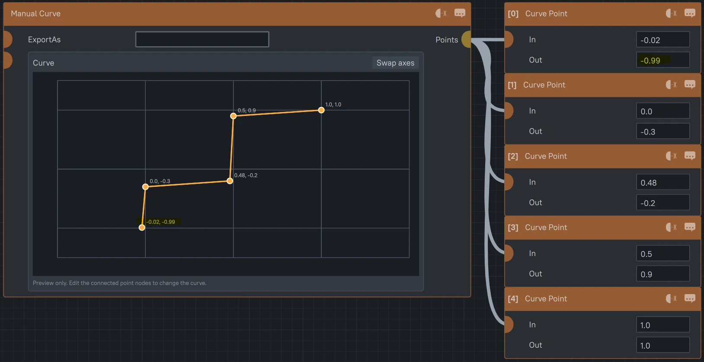
As a side note, we didn't run into this problem before due to how simplex noise works. While the values it outputs is between -1 to 1, the values are so
"smoothened" out that it'll never reach -1 or 1 and has a distribution of values like the bell curve below. If you want truly random values between and reaching
-1 to 1, try 'White Noise.' It has no smoothening affect!
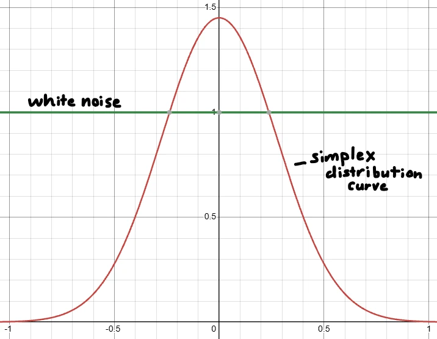
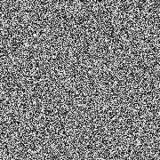
Starting off with our first shaping technique, we'll try the age old trick of just applying more noise on top!
The setup is quite simple adding another noise at a smaller scale to the curvemapped noise we've been working on.
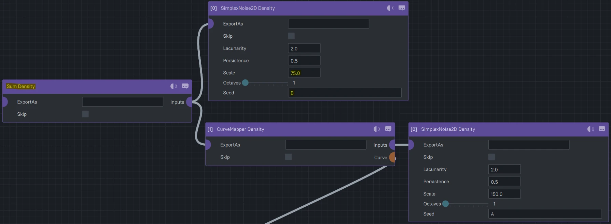
Uh oh, we've reached outside the bounds again! This time we'll apply normalizers to remap the noise to be compliant with our bounds.
Normalizers are meant to remap the 'in' values to be within a new range of values typically within the final -1 to 1 range, so if we scale down the plateaus to 0.75
and the smaller scaled "detail noise" to 0.25 so it's not as strong of an affect as the plateaus, we shouldn't exceed our range!
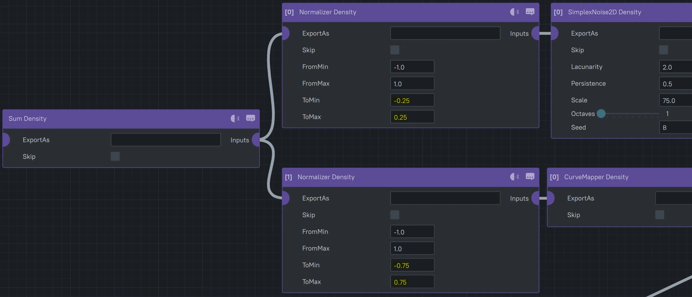
You may have noticed, we could've also done this by multiplying a constant to each noise values or adding another curvemapper to each to remap the values!
While true and up to your designer heart, I think using a normalizer creates the smallest node footprint and is really simple to modify if we ever add more
noise values!
And with that... Our first technique is down and already looking 10x better, adding a lot of detail to those relatively flat planes we created previously.
If terrain or block palettes ever look too flat, add some noise!
However... We're not done yet, because I want to add this scaled down noise to before the curvemapper instead to see if it can break up those circular cliffs.
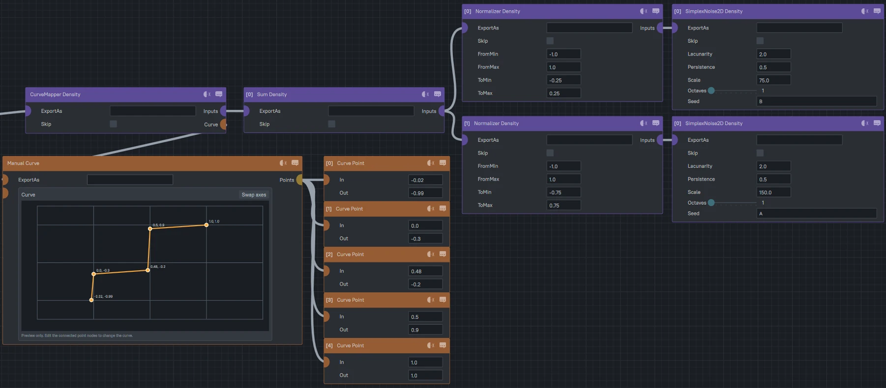
Looking nice! However, there's an even simpler way of doing this by utilizing octaves which will make the node graph super compact!
Octaves work the same way of adding detail noise to an already existing noise and the strength and scale of each consecutive octave is controlled by
these 'Lacunarity' and 'Persistence' values. Lacunarity controls how many times smaller each octave is so a value of 2 will add a noise that is 2x smaller
than the previous. Persistence is how strong the next octave is, so a value of 0.5 will make each octave half as strong as the last. The resulting
noise will still never exceed the -1 to 1 bounds however, so in the example of 2 octaves with a 0.5 persistence: the first noise will be at 2/3rds strength
with the second being at 1/3rd stength totaling 1 while still being half of the first. Feel free to try out the values here!
Lacunarity:
2.0
Persistence:
0.5
=
+
+
Here's the resulting nodes using octaves instead of adding 2 simplex nodes.
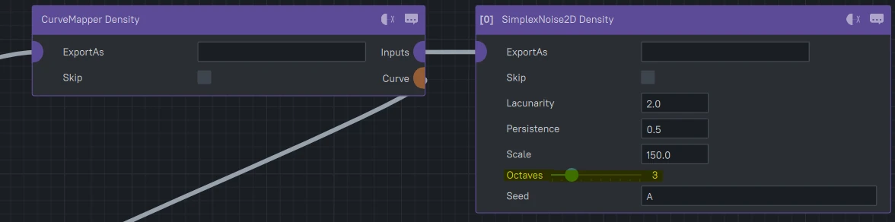
Our second shaping technique involves mixing noises together!
The mix node is a super useful node for varying up the terrain! It works with 3 densities,
the first 2 inputs are different terrain shaping densities while the 3rd input controls
which shaping density should generate or a blend between the 2 so there's no sudden drop offs.
Let's look at a simple example of a mix between a simplex noise and the constant of 0 along the z axis.
You can see we remap the 3rd input or "gauge" of z values using the normalizer to where at z=-50,
we input 0 into the mix resulting in only the first density at -50 and beyond while it blends towards the second
density at z=50, or when the gauge hits 1.
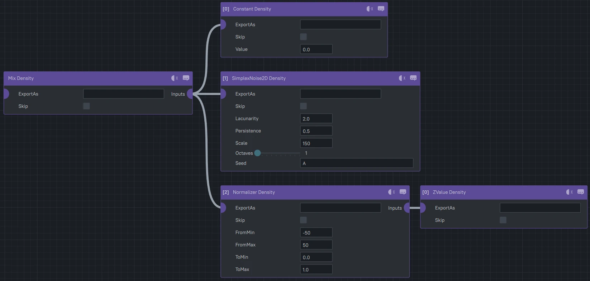
In practice, it can look like the following where it blends between 2 different simplex noises
using another simplex as the gauge. A lot of random noise mushed together but it creates very simple
complex terrain. Terrain in fact very similar to how Minecraft adds detail onto it's own terrain!
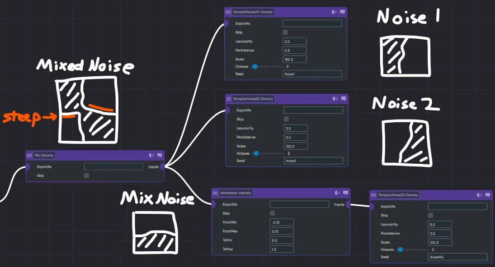
Now going back to our plateaued design, instead of mixing between different noise values, let's mix between
different curvemappers! We'll leave our first sharp cliffs curvemap, but let's add and test how more
gradual cliffs would look.
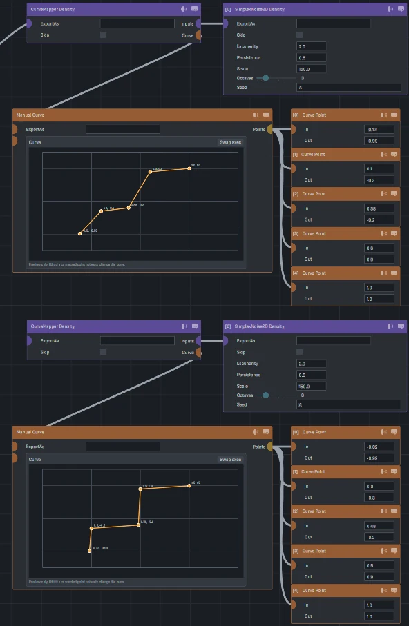
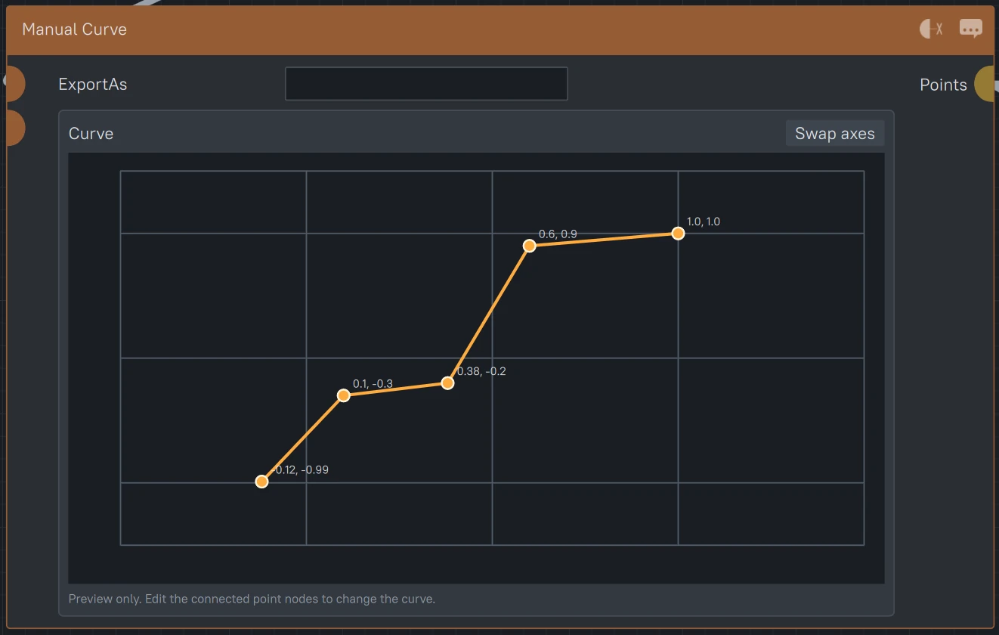
Not bad, but now let's mix these 2 designs together to create sorta more eroded cliff edges! We'll want
this erosion to be relatively random, so the gauge will be another simplex.
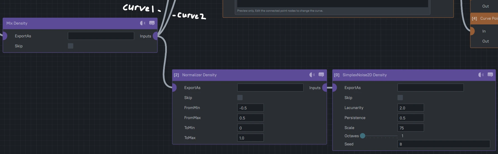
Now our cliffs are looking a lot better! We can also now easily modify how eroded these cliffs are by
moving the 'in' values of our normalizer. Also feel free to modify both curves to blend between different
shapes! Perhaps 2 completely different cliff curves will create some interesting results...?
Let's try out one more technique! Warping!
Warping works as if smudging 1 density with another creating these swirly patterns! But be careful!
While looking good, it does increase the performance cost quite fast especially at large scales
so use sparingly! I'd recommend to try and only use it occasional for materials as it comes across
a lot easier in that pass than using larger warps on terrain!
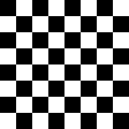
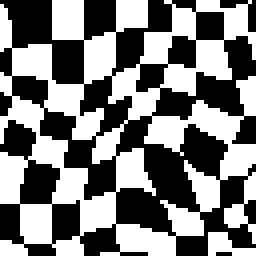
Alright, so let's attach one of those FastGradientWarps on to our plateaus!
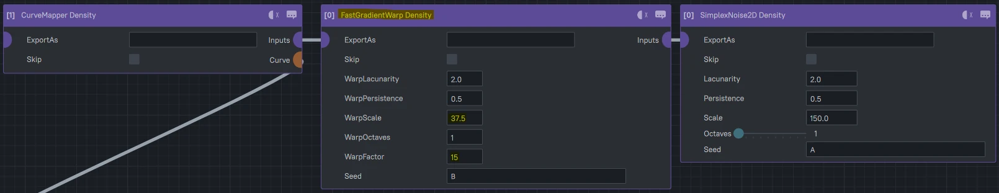
Whoops! Looks like we accidentally created some 3d terrain features! We're not even at that guide yet!
When we get there, many more (much more performant) ways of creating 3d terrain will be covered.
To fix our current issue, let's add a yoverride to our nodes which will force all of the following nodes
to be calculated within our 2D scope by only ever considering their values at y=0 along the entire y-axis.
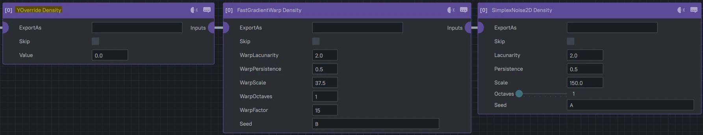
Perfect! And again this node makes it fairly easy to modify how it looks with the scale of its internal
noise pattern and the intensity of the affects!
Now let's add all of these effects together to see what we got!
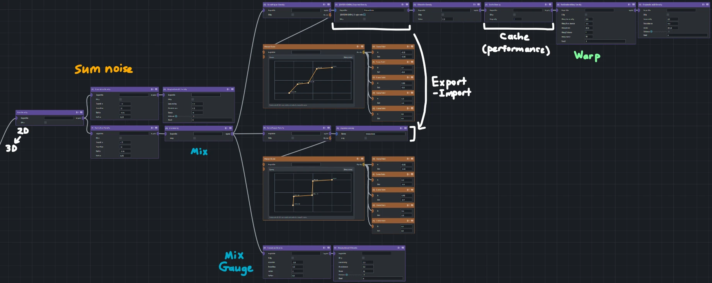
We're already creating interesting and varied terrain and we've barely even started!
Next we'll look at 1 final technique for shaping terrain and creating rivers!
Next Up